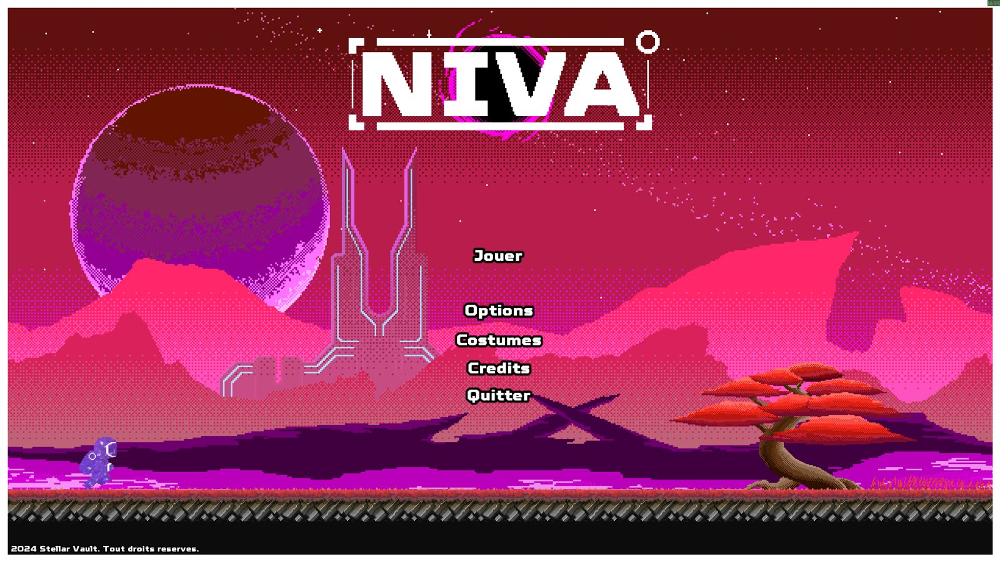
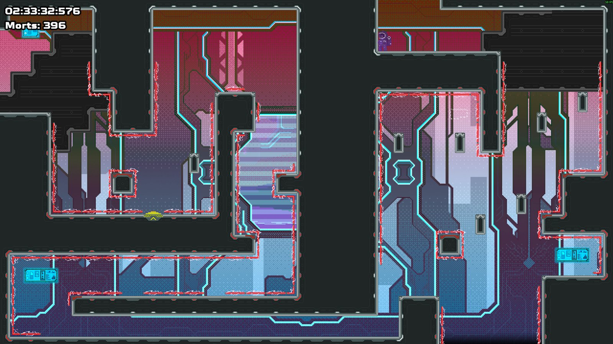

Un platformer 2D « die & retry » dans un thème spatial.
Hébergé sur le site de Créajeux. Décompresse l’archive, puis lance l’exécutable.

J’ai pris en charge le level design ainsi que l’interface de certains menus.
Dans un jeu « die & retry », le niveau est au cœur de l’expérience : sa difficulté, son rythme et la clarté des obstacles décident si le joueur a envie de recommencer ou d’abandonner. Mon travail a consisté à construire des niveaux qui fonctionnent dans ce cadre.

J’ai conçu et intégré l’UI de certains menus, avec l’objectif qu’ils soient clairs et cohérents avec le thème spatial du jeu.